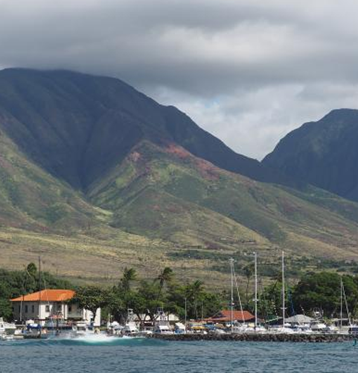
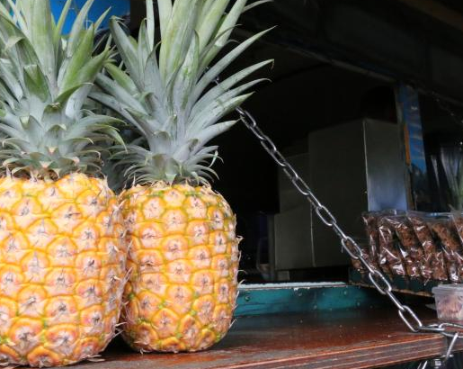

마우이에서 맛있는 음식을 맛보려면 어디로
가야 할까요?
마우이 섬에서는 이런 레스토랑 칠판에 셰프가 재료를 공급받는 농장과 어부의 정보가 자세
히 적혀 있습니다.
일반적으로, 섬의 서부와 남부 지역에 있는 레스토랑은 해변이 보이는 전망과 갓 잡은 신선한 해
산물로 특히 유명하며, 평범한 생선 가게부터 촛불이 켜진 다이닝 룸까지 정말 다양한 장소에서
식사를 즐길 수 있습니다. 마우이 중부와 해안 마을인 키헤이에는 소규모 가정식 식당, 토속 식당
등 소박함의 극치를 달리는 식당이 주를 이룹니다.
구체적인 레스토랑 추천 정보
카우아이 섬에서는 리치와 망고같이 이 섬에서 난 과일로 달콤함을 낸 샹그리아로 목을 축여보세요.
마우이에서 소문난 셰프들은 대부분 할레아칼라(Haleakala) 산허리에 일군 계단식 농장 업컨트리 마우이(Upcountry Maui) 지역에서 풍족하게 나는 농산물과 현지 해산물을 주로 사용합니다. 오파카파카(ōpakapaka, 분홍색 도미)와 릴리코이(Lilikoi, 패션프루트)로 만든 가정식 요리를 선보이는 카나 키친(Kaana Kitchen)을 비롯한 다양한 레스토랑에서 입소문 난 요리를 즐겨보세요.
마우이 원주민 출신 셰프 아이작 밴카코(Isaac Bancaco)는 마우이 섬의 농부, 목장주 및 어부에게 납품받는 아삭한 아시아 배, 부드러운 와규 비프, 신선한 전복 등 식재료의 85%가량을 마우이산으로 사용합니다.라이브로 진행되는 음악 공연을 관람하고 싱싱한 알래스카 넙치와 연어를 드셔 보세요. 이 축제는 5월부터 9월 초까지 매주 토요일과 일요일에 열립니다.

라하이나 마을: 마우이 섬에서 모험을 떠나는
관문
라하이나 항구에서 정박해 선을 바라보는 선박들
라하이나는 마우이 섬 여행을 시작하기에 완벽한 기점입니다. 이 마을은 역사도 특별합니다. 하와이 섬의 왕과 통치자들이 이곳에 살았고 그 후 19세기 중반 미국 포경선
이 정박하는 항구 도시가 되었습니다. 지금도 옛시대의 정취를 간직하고 있으며 여행
자는 카약과 스탠드업 패들보드 투어는 물론 바다에서 즐기는 여러 액티비티를 경험
할 수 있습니다. 전문가는 물론 초심자도 편하게 즐길 수 있으며 개인 강습도 제공됩
니다. 패들보드를 타고 해안가를 돌며 마우이 섬을 살펴보거나 가이드와 함께 카약을
타고 나가 아무런 방해 없이 고요하게 고래를 관찰해 보세요.

파인애플 농장에서 갓 딴 파인애플 맛보기
마우이 골드 파인애플 투어(Maui Gold Pineapple Tour)에 참여해 마우이 섬의 대
자연을 만끽해보세요. 1시간 30분가량 소요되는 파인애플 버스 투어는 아름다운 산간
지대를 장식하는 마카와우(Makawao) 농장으로 향해 파인애플을 재배하고 따고 포
장하는 방법을 보여줍니다. 농장에서 신선한 파인애플을 맛보고 챙겨갈 수도 있습니
다. 우아한 할리말리 제너럴 스토어(The Hali'imaile General Store) 레스토랑에서
점심을 먹거나 할리말리 디스틸링 컴퍼니(Hali'imaile Distilling Company) 투어를
추가할 수도 있습니다. 증류 공장에서는 세상에 하나뿐인 파인애플 보드카와 록음악
가수 새미 하거(Sammy Hagar)를 기념하는 ‘새미스 비치 바 럼(Sammy's Beach B
ar Rum)’을 생산합니다.
 하와이 섬에서 농
장의 신선함을 맛
보는 네 가지 방법
하와이 섬에서 농
장의 신선함을 맛
보는 네 가지 방법